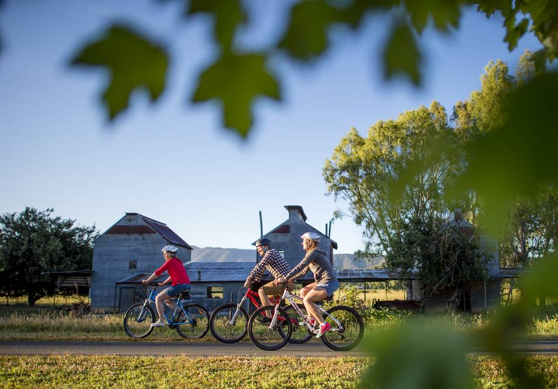

Once you've ridden the Rail Trail, the valley has plenty more. Some of Victoria's best-known road climbs start a few minutes from our gate, and Bright has a mountain bike park right on the edge of town.
Road climbs
The Mount Buffalo climb is reached from Porepunkah. It's about 20 km at a steady five per cent, rising just over 1,000 metres to the plateau. From Bright you can also climb the Tawonga Gap towards Mount Beauty, or ride up the valley to Harrietville and take on Mount Hotham, about 30 km and 1,300 metres of climbing.
Mountain biking
Mystic Bike Park sits above Bright on Coronation Avenue, with more than 60 km of trails, shuttles up the hill, bike hire and lessons. It's run by Elevation Parks.

Hiring a bike
Bright has several bike and e-bike hire shops, including Cyclepath and Bright Electric Bikes. Book ahead in the busy seasons. If you bring your own, we have secure bike storage on site.